Adzsys
- About Us
- Product
- Contact Us
Adzsys
 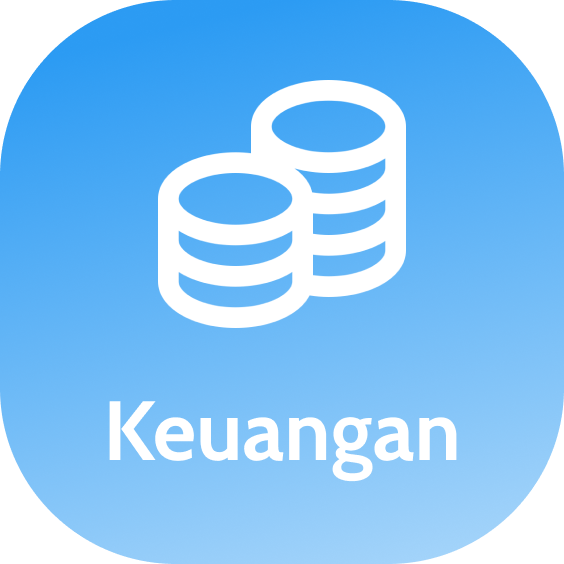
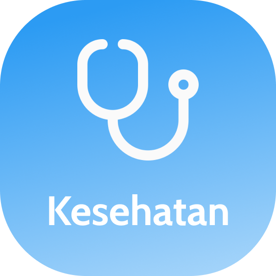
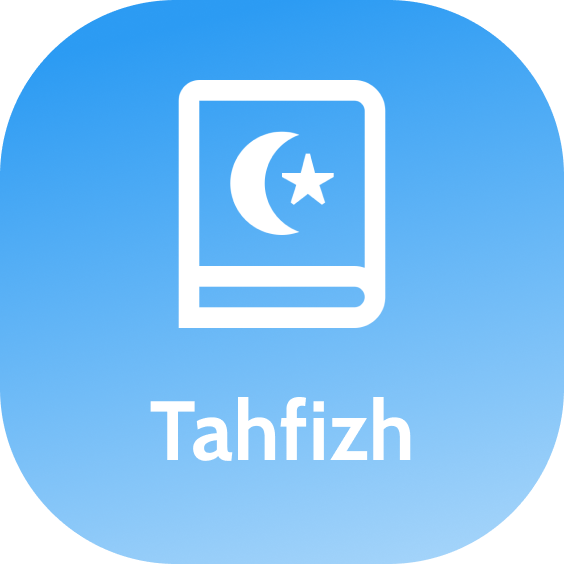
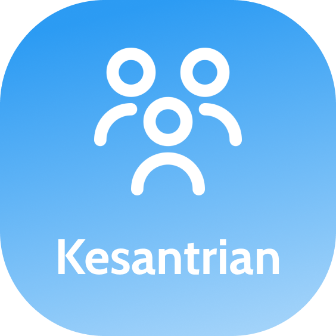
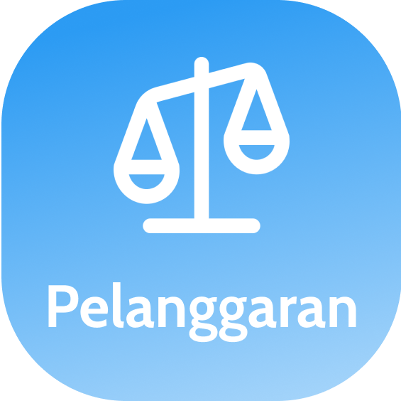
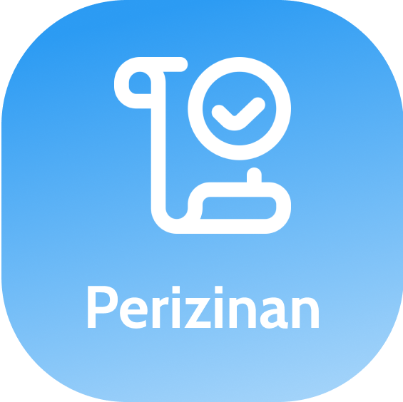
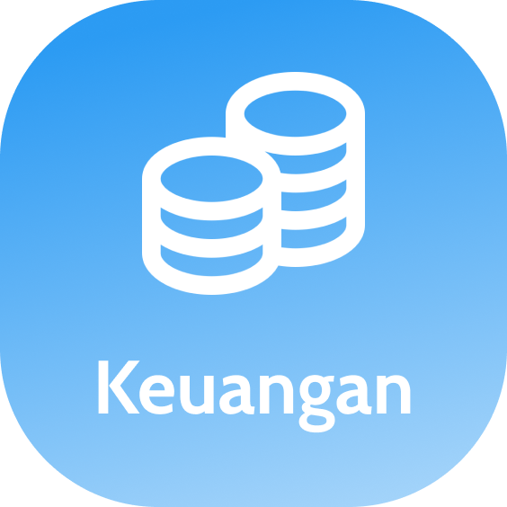
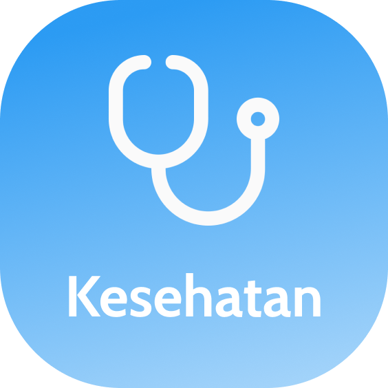
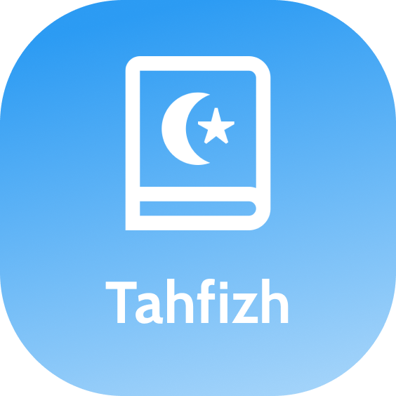
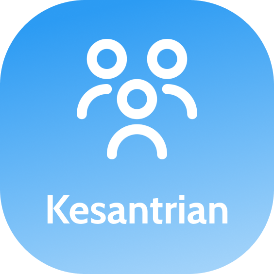
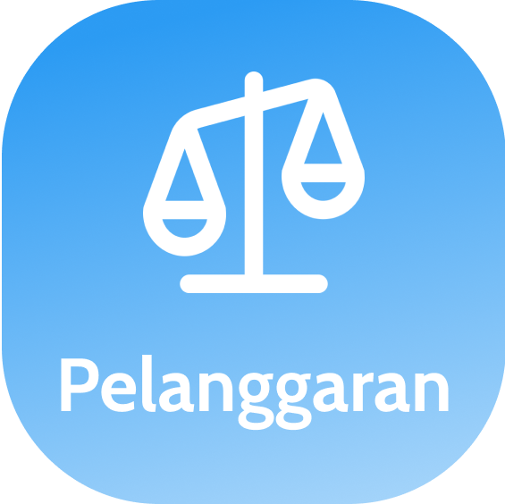
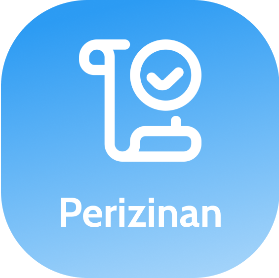


Kami menawarkan solusi inovatif untuk mempermudah
pengelolaan data pondok pesantren.
Kami memperkenalkan aplikasi AdzSys, yang terdiri dari dua
bagian. Pertama, aplikasi web-based yang dapat diakses
melalui browser untuk admin pondok pesantren, meliputi tata
usaha, kesantrian, tahfidz, dan keuangan. Kedua, aplikasi
Android untuk walisantri yang tersedia di Playstore.
AdzSys juga ideal digunakan di Sekolah Islam
sebagai aplikasi spp sekolah, aplikasi keuangan
sekolah atau juga aplikasi administrasi sekolah karna
secara umum pengelolaan administrasi dan keuangan
sekolah lebih simple daripada pondok pesantren.

Kami membereskan berbagai masalah manajemen
pondok langsung dalam satu aplikasi!


AdzSys berkomitmen untuk berkolaborasi bersama dengan pondok pesantren dan
sekolah Islam di Indonesia demi kemajuan bersama, menjadikan pondok yang
lebih unggul, lebih maju/modern, memiliki manajemen yang bagus, dan
membangun keakraban yang baik dengan walisantri.